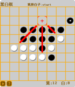

|
◆玩法
→基本规则
黑白棋的棋盘是一个有8*8方格的棋盘。
下棋时将棋下在空格中间，而不是像围棋一样下在交叉点上。
开始时在棋盘正中有两白两黑四个棋子交叉放置，黑棋总是先下子。

→下子的方法
在棋盘上移动鼠标，会出现定位框，从定位框位置往周围延伸，如果在横、竖、斜八个方向内有一个自己的棋子，
而且被夹在中间的有对方的棋子，则中间的全部翻转，成为自己的棋子。
并且，只有在可以翻转棋子的地方下子才有效。
如图所示，现在轮到白子下棋，如果在瞄准框的位置下子，三个方向被红线划出的黑棋就会翻转成白棋
→胜负判定条件
如果玩家在棋盘上没有地方可以下子，则该玩家对手可以连下。
双方都没有棋子可以下时棋局结束，以棋子数目来计算胜负，棋子多的一方获胜。
在棋盘还没有下满时，如果一方的棋子已经被对方吃光，则棋局也结束。将对手棋子吃光的一方获胜。
◆游戏界面
→设置和重启
鼠标移动到上方，
会变成手型，提示“设置”，点击之后出现设置界面，再次点击，隐藏设置界面。
在设置界面里，可以选择使用的棋子颜色，也可以选择下棋的难度。选择之后，点击下方的“重新开始”按钮，
可以重启游戏。
→帮助
鼠标移动到上方，
会变成手型，提示“帮助”，点击之后出现帮助界面，再次点击，隐藏帮助界面。
→结束
当胜负已定时，就会在左下角显示图标，
点击之后可以结束游戏。
◆创意来源
→百科
百度“黑白棋”百科
◆版本历史
→ver 1.0
人机对战，机器具备普通智能
|